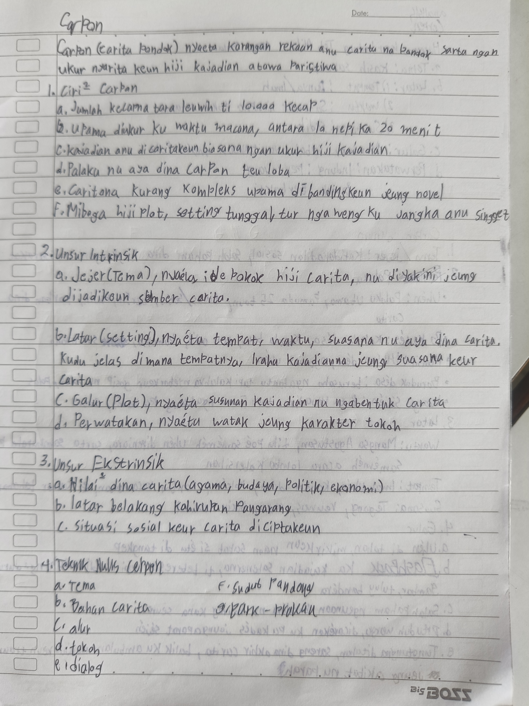
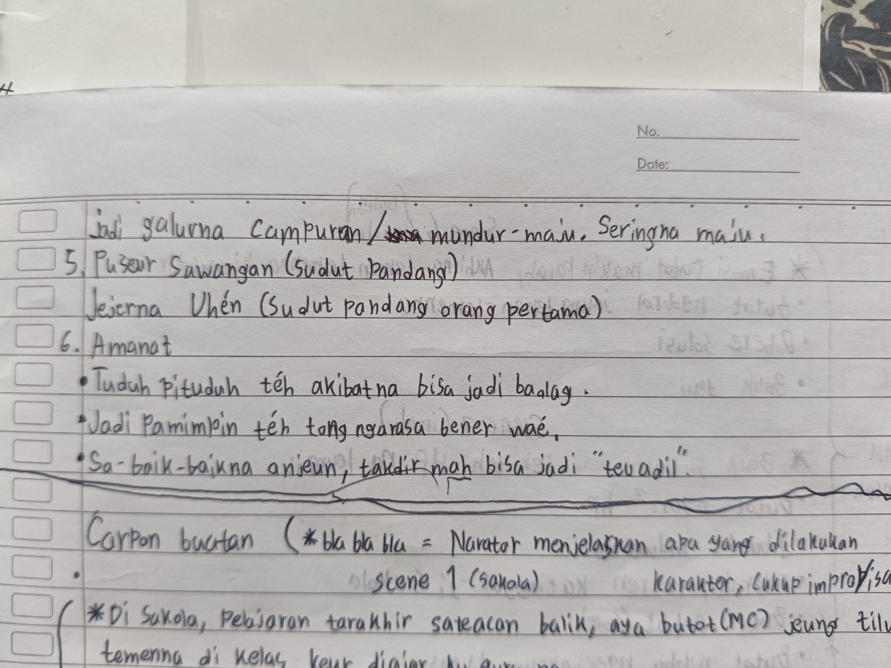

Halaman 15, Buku catatan Sunda Badi

Halaman 16, Buku catatan Sunda Badi

Halaman 17, Buku catatan Sunda Badi
Carpon (Carita Pondok) nyaéta karangan rékaan anu carita na pondok sarta ngan ukur nyaritakeun hiji kajadian atawa peristiwa.
• Ciri-Ciri Carpon
a. Jumlah kecapna tara leuwih ti 10.000 kecap.
b. Upama diukur ku waktu macana, antara 10 nepi ka 20 menit.
c. Kajadian anu di caritakeun biasana ngan ukur hiji kajadian.
d. Palaku nu aya dina carpon teu loba.
e. Caritana kurang kompleks upama di bandingkeun jeung Novél.
f. Miboga hiji plot, sétting tunggal tur ngawengku jangka anu singget.
• Unsur Intrinsik Carpon
a. Jéjér(Téma), nyaéta idé pokok hiji carita, nu diyakini jeung dijadikeun sumber carita.
b. Latar(setting), nyaéta tempat, waktu, suasana nu aya dina carita. Kudu jelas dimana tempatna, iraha kajadianna, jeung suasana keur carita.
c. Galur(Plot), nyaéta susunan kajadian nu ngabentuk carita.
d. Perwatakan, nyaéta watak jeung karakter tokoh.
• Unsur Ékstrinsik Carpon
a. Nilai-nilai dina carita(Agama, budaya, politik, ekonomi, jeung lain-lain).
b. Latar belakang kahirupan pangarang.
c. Situasi sosial pas carita/carpon di ciptakeun.
• Téknik nulis Carpon
- Téma
- Bahan Carita
- Alur
- Tokoh
- Dialog
- Sudut Pandang
- Prak-Prakan
• Analisis Carpon Harewos Keur Indung Téh Nila
a. Téma : Kasih Sayang
b. Latar
1. Tempat : Dunya/Imah
2. Waktu : Sa-umur hirupna tokoh utama
3. Suasana : Sedih
c. Galur : Mundur, Sabab nyaritakeun Masa Lalu
d. Perwatakan : Indung(Penyayang), Budak(Berbakti)
• Analisis Carpon Oknum
1. Téma/Jéjér : Katidakadilan Sosial, Salah paham dina lingkungan masyarakat.
2. Palaku :
- Uhén : Palaku Utama, Pamuda 25 taun, tulus/setia, bersih, rajin, korban dina carita
- Pa Kadés : Kapala Désa, Kapala Batu, teu Adil, Pamaksa, Sok nyaho
- Hansip : Utusan Désa, ngawas Uhén
- Barudak Désa : Berusaha ngabantu tapi kalahka nyebarkeun gosip nu salah, polos
- Warga Séjén : Buta Kajadian tapi Fomo ngadukung Pa Kadés, sotoy
3. Latar :
- Tempat : Imah Uhén, Kantor Désa, Polsék, Kantor Kacamatan, & Kamar Tahanan
- Waktu : Mangsa Agustusan, Tilu poé saméméh Uhén dipenjara, sarta sababaraha poé saméméh acara lomba kabersihan.
- Suasana : Tegang, reuwas, sedih, keuheul.
4. Galur
- Uhén di tahan, mikirkeun naon sabab si éta di tangkep.
- FLASHBACK ka kajadian sabenerna, ti beberesih nepi ka dituduh ngaduruk gambar, tuluy bendéra.
- Salah paham ngeunaan bandéra nu murag kana seureu.
- Dituduh warga, dicarékan ku Pa Kadés jeung aparat Séjén.
- Tuntungna ditahan, sareng dina akhir carita, balik ku ambulan nunjukkeun trauma, jeung akibat nu parah.
Jadi galurna Campuran/Mundur-maju. Seringna Maju.
5. Puseur Sawangan (Sudut Pandang)
Jéjérna Uhén (Sudut Pandang orang pertama)
6. Amanat
- Tuduh pituduh téh akibatna bisa jadi badag
- Jadi pamimpin Téh tong ngarasa bener waé
- Sabaik-baik na anjeun, takdir mah bisa jadi "teu adil"